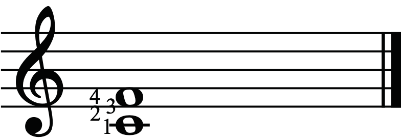
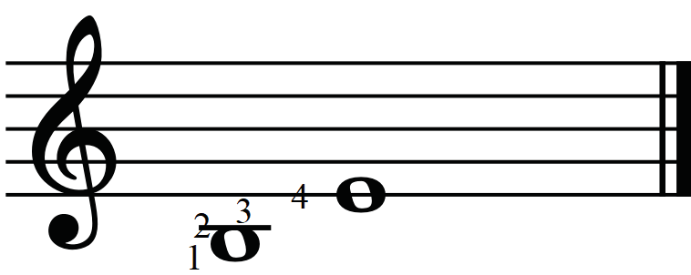
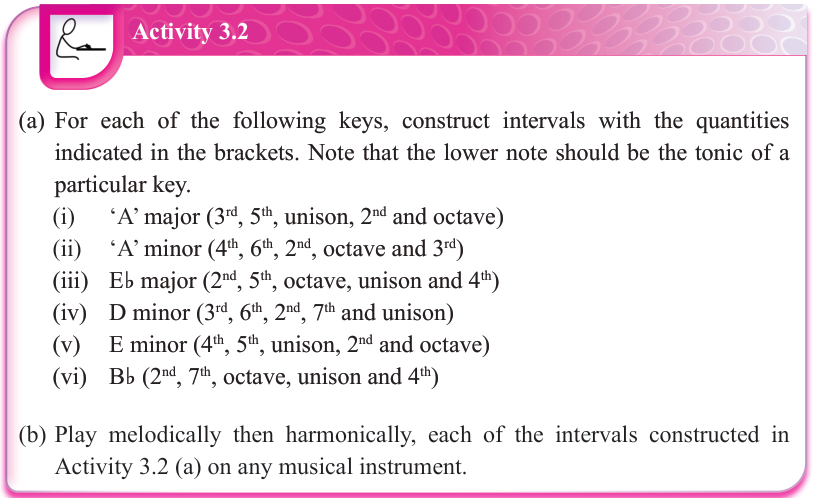
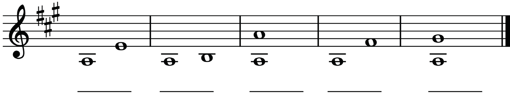

In staff notation, you can also identify an interval quantity simply by counting every line and space from the bottom note to the top note.
Make sure the count begins as 1 on the line or space of the bottom note as shown in figures 3.8 and 3.9.



Activity 3.2
(a) For each of the following keys, construct intervals with the quantities indicated in the brackets. Note that the lower note should be the tonic of a particular key.
- (i) ‘A’ major (3rd, 5th, unison, 2nd and octave)
- (ii) ‘A’ minor (4th, 6th, 2nd, octave and 3rd)
- (iii) Eb major (2nd, 5th, octave, unison and 4th)
- (iv) D minor (3rd, 6th, 2nd, 7th and unison)
- (v) E minor (4th, 5th, unison, 2nd and octave)
- (vi) Bb (2nd, 7th, octave, unison and 4th)
(b) Play melodically then harmonically, each of the intervals constructed in Activity 3.2 (a) on any musical instrument.
Exercise 3.1
Write the quantity of each of the following intervals in the spaces provided.
1.
